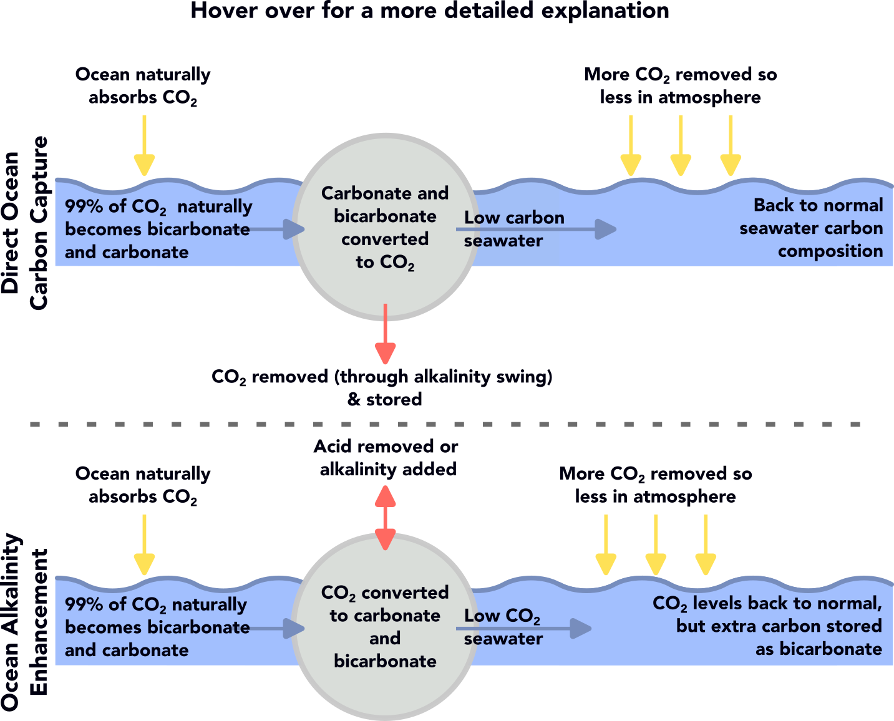
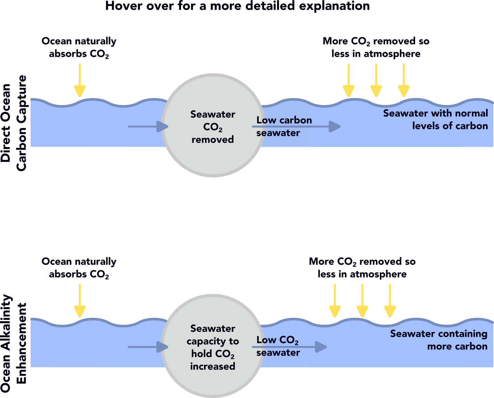

Do we need to remove excess Carbon Dioxide from the atmosphere?
Carbon dioxide (CO2) is a greenhouse gas that traps heat in the atmosphere and warms the planet. The top priority is to urgently cut our use of fossil fuels, to avoid adding CO2 to the atmosphere. Removing excess CO2 from the atmosphere is not a substitute for this, but could allow us to address sectors (such as flying and farming) which we don't yet know how to clean up. It could also help us address past CO2 emissions. By cutting CO2 emissions as much as possible and then removing CO2 from the atmosphere to balance the remaining emissions, we can reach what is known as Net Zero. The animation below helps explain this.
Why the ocean?
The ocean acts like a sponge, absorbing a large share of human-made CO2. If you compare the same volume of seawater and air, the seawater contains over 100 times more carbon. Capturing carbon from seawater, or increasing the capacity of the water to hold carbon, could therefore be more practical than capturing carbon from air. Removing CO2 this way would also minimise competition for space on land, which limits how much carbon we can remove from the atmosphere by approaches like tree planting.
How can seawater help remove CO2 from the atmosphere?
The ocean is where human-emitted CO2 will ultimately go, but this natural process of carbon removal takes tens of thousands of years. We can speed things up in two different ways. If we think of the ocean as a sponge for CO2, we can:
- (Option 1) 'squeeze out the sponge', taking carbon out of seawater, so it can refill with CO2 from the atmosphere. This is known as Direct Ocean Carbon Capture;
- (Option 2) 'make the sponge more absorbent', increasing the capacity of seawater to hold carbon. This is known as Ocean Alkalinity Enhancement.


For a more detailed explanation of the process and the chemistry, click here.
Biological ideas like farming seaweed sound promising, but the ocean can only support a certain amount of growth because nutrients are limited. Growing more plants in one place can reduce growth elsewhere and may harm biodiversity. So SeaCURE focuses on engineered methods, which we believe are safer and easier to scale.
What is SeaCURE?
The SeaCURE team built a Weymouth pilot plant that can test both engineered approaches (Option 1 and 2). It is the only publicly funded site of its kind outside a lab, and the first pilot of its kind outside the USA. This approach provides an objective view of what works, what doesn't, and the challenges ahead.
So far, we have focused on Option 1: removing CO2 from seawater. The small amount of CO2 we capture in tests is released back to the air, but at full scale it would be stored deep underground or used in long-lasting products.
SEA LIFE Weymouth provides seawater, space, and strong links to marine science. Together with the large amount of data we already have about the English Channel's biology and chemistry, this makes it an ideal location.
What have we done so far?
Over a two-month trial, we showed that the system can remove CO2 from seawater. We also studied:
- Potential marine impacts and how to safeguard the marine environment.
- How to prove CO2 is actually removed from the air.
- Likely energy use and costs.
- What large-scale operation might look like, and what barriers would need to be overcome.
To learn more about what the SeaCURE project has done so far click here.
The project has been led and run by the University of Exeter, with the Plymouth Marine Laboratory, Brunel University of London and Eliquo Hydrok.
What about impacts on marine life?
At this small pilot-plant scale, we are confident the process does not harm marine life. The low-carbon seawater we release dilutes very quickly, returning to normal conditions within a few metres. Our seawater intake pipe is buried under the beach, so fish cannot be sucked in. This is the same seawater intake system that supplies SEA LIFE.
We work closely with Defra and the Environment Agency, and follow our Environment Agency Permit. Controls prevent water being released above pH 9.5 (for context, this is the upper limit for UK drinking water).
Commercial scale plants would release more water. We need to understand how this might affect ecosystems. We ran laboratory experiments to test this, focusing on marine plankton and mussels. When low-carbon water was mixed with at least an equal volume of ordinary seawater, most species showed only small changes in their growth or activity. However, when low-carbon seawater was mixed with only small amounts of normal seawater, some organisms appeared not to be able to grow, or significantly reduced their activity. This shows the need for more research.
For more information about the SeaCURE marine impact experiments click here.
For information on the potential environmental impact of increasing the capacity of seawater to hold carbon (Option 2), which has been studied in greater detail, click here.
What's next?
We want to continue our work in Weymouth. Our next priorities are to:
- Understand how marine life and ecosystems would react to commercial scale carbon removal
Some effects can't be captured in a lab, so experiments in larger on-shore tanks, and potentially at-sea floating tanks, can be used to see how different marine organisms respond over time to the released seawater.
- Demonstrate fully that removing CO2 from seawater leads to CO2 being removed from the air.
This could be investigated by tracking the water and simultaneously measuring and modelling how it changes.
- Broaden our research to look at increasing the capacity of seawater to hold CO2
We want to expand our research to look at 'making the sponge more absorbent' (Option 2). To do this, we would run the pilot plant in a different configuration, to study potential long-term effects on the ocean, challenges, and how well the process removes CO2.
Click here for more details about the kind of activity that could happen from SEA LIFE over the coming years.
Who is funding this?
The first project was funded by the UK Government's Greenhouse Gas Removal Innovation Programme (2021–2025).
Since May 2025, support has come from the University of Exeter and the Carbon to Sea Initiative, a non-profit funding ocean carbon removal research globally. Carbon to Sea have funded workshops to understand the interest and thoughts of the local community.
Local community views will help guide future funding applications aiming to make Weymouth a global research hub.
Conclusion
We've shown from a two-month trial that we can remove carbon from seawater, but there is a lot more to be done. The ocean is complex and changes with tides, seasons and year-to-year. Building a full understanding will take time and effort.
Meanwhile, we're keeping an open mind. It's too early to know which methods will work best, and we may need a mix to tackle CO₂ effectively.
The facility in Weymouth is globally unique. Continued research here helps us gather real world evidence responsibly. This evidence will help the public and policymakers decide whether ocean-based carbon removal can—and should—play a part in tackling climate change, and how we might best do this.